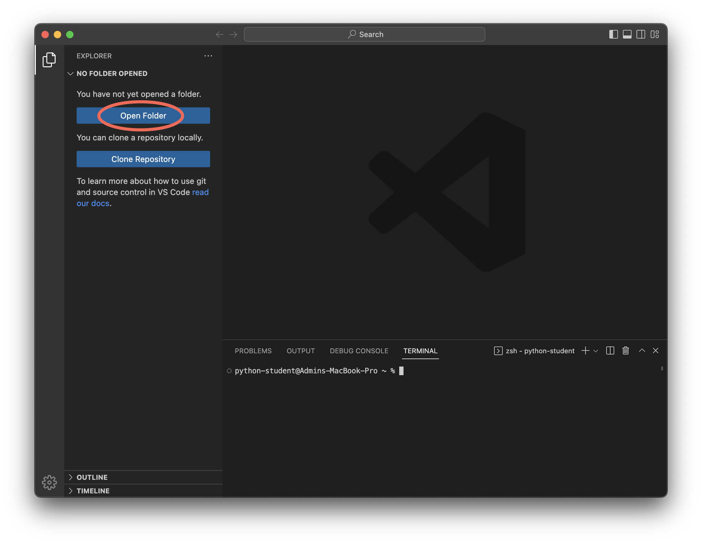
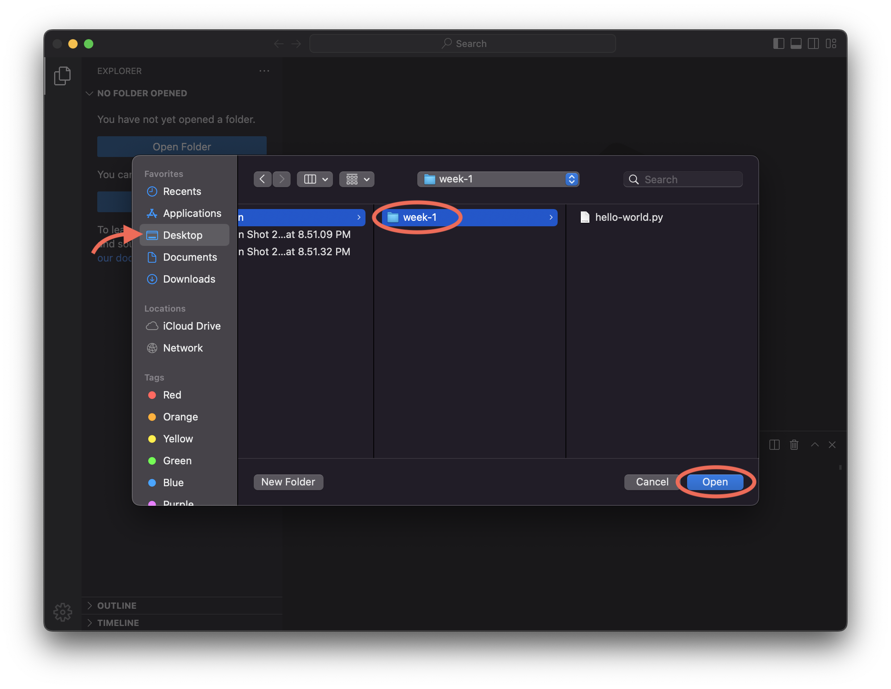
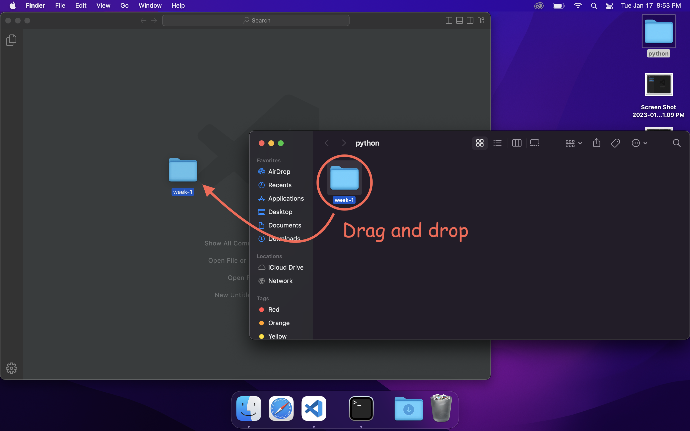
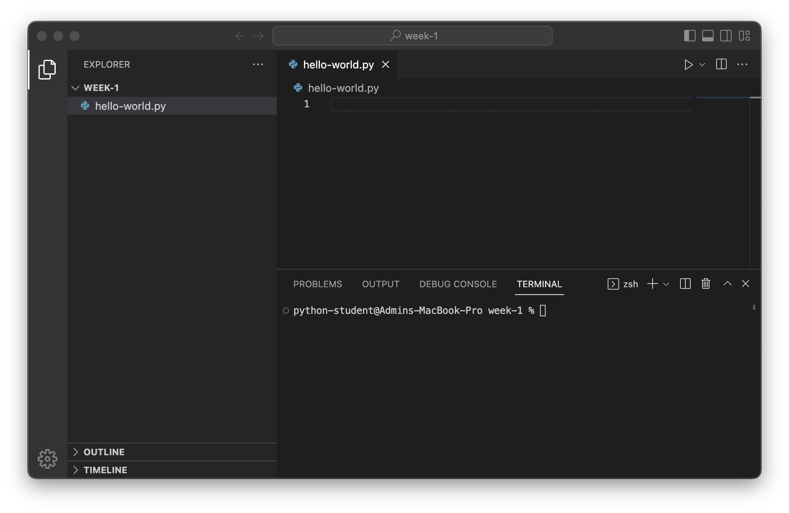

.. sectnum::
Lab 1 — Mad Libs#
Important
Write on the board: sun-python-23w.github.io
Important
Hand out laptops
Use post-its to keep track of who has which laptop ...?
Set up#
Launch the application Visual Studio Code (should be in the dock)
Open the folder
week-1in thepythonfolder on the desktop.You can open the folder from VSCode by clicking Open Folder from the explorer, and then selecting
pythonandweek-1.  
OR
You can navigate to the
week-1folder in finder and drop it in VSCode. 
Once your application looks like this you are ready to commence the lab! 
See VSCode for a refresher on the interface and buttons.
Exercises#
Greetings#
Start the python interactive interpreter (enter
pythonin the terminal)You should see the interactive prompt:
>>>Write
"Hello"and press enter.Notice this string is already a value so there is nothing to evaluate and it is simply printed back out:
Tip
We call this a literal, because when we define it we are literally typing out the value.
Store
"Hello"in a variable namedword.Type the name of the variable,
word, and press enter.Notice that the output is the value stored in the variable.
Next, assign to the variable
greetingthe result of combiningwordwith a comma, a space, and your name (hint: see Combining strings).Caution
Do not type
"Hello"out again for this step!Display the value of
greetingto check it is correct. It should look something like this:>>> greeting 'Hello, Julian'
Let's change up our greeting. Choose a new word you would use to greet someone and store that in the
wordvariable (e.g., "Howdy", "Salutations", "Greetings", or anything you like).Display the value of
greetingagain.Notice that the value of
greetinghas not changed. Take a moment to think about why this is the case.Finally, define
greetingagain exactly as you did before (although the value ofwordhas changed) by using the up arrow to step through your command historyDisplay
greetingto check that it was updated.I stored
"Howdy"in mywordvariable and got this output; your output should look similar but will have a different word and name:>>> greeting 'Howdy, Julian'
Exit the interactive interpreter by typing
exit()and pressing enter.
Hello, world#
Now that we're comfortable working in the interactive intepreter lets take a look at writing and running files.
Use
print()to write a program in the filehello-world.pythat will display Hello, world! when run:% python hello-word.py "Hello, world!"
Tip
This program will only be one line long.
Note
The first known 'Hello world' program was written in 1974.